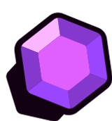
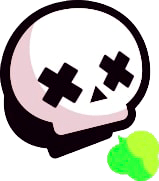
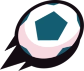

MODOS DE JUEGOS
Los eventos son minijuegos que que hay dentro de Brawl Stars. Hay eventos permanentes, eventos que se van rotando y eventos de fin de semana.
ATRAPAGEMAS
3c3 y evento permanente. Se trata de conseguir gemas que salen del centro del mapa, al llegar a 10 (o más) gemas se carga un contador de 15 segundos cuando se termina el equipo de las 10 gemas gana, si tienes gemas y te matan pierdes las gemas y si el contador estaba activo, se reinicia y no vuelve a cargar hasta que tu equipo vuelva a tener diez gemas.
SUPERVIVENCIA
En este evento, hay 10 jugadores sin equipos. El objetivo del juego es derrotar a todos tus oponentes y ser el último Brawler en pie. Puedes obtener Cubos de fuerza al derrotar a los Brawlers enemigos o al abrir Cajas en el mapa. La salud de las Cajas de cubos de fuerza depende del nivel de fuerza promedio de todos los jugadores y tiene una salud máxima de 8500 y una salud mínima de 4500.
BALÓN BRAWL
3c3 y evento permanente. Un partido al estilo Brawl, ganará quien anote 2 goles o anote la mayor cantidad cuando el tiempo acabe. Si hay empate, habrá un minuto de tiempo extra en el que el primer gol que sea anotado, es el que define el ganador. Si este se termina, la partida acaba en empate.